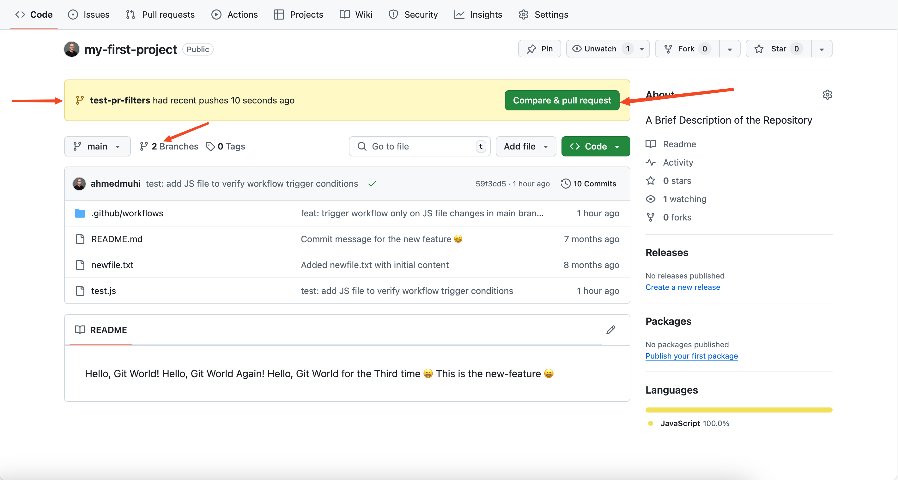
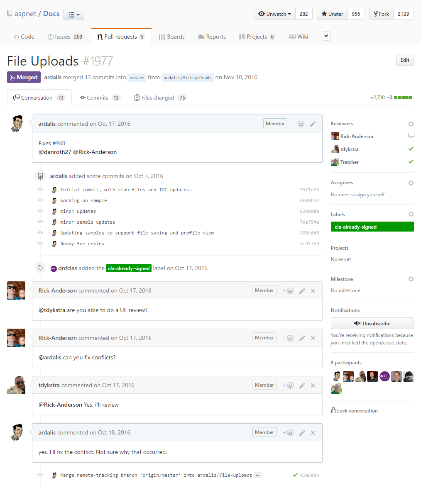

GitHub
Issues
E' una taskbar di Github che permette di aprire dei problemi riguardanti il codice dell'applicazione/immagini/bug ecc...
In questa parte descriviamo quale sia il problema in modo descrittivo. Una buona forma per scrivere ISSUE è:
### Description
(Provide a clear and concise description of the problem.)
### Steps to Reproduce
1. [Step 1]
2. [Step 2]
### Expected Behavior
(Explain what you expected to happen.)
### Actual Behavior
(Explain what actually happened.)
### Environment
- OS:
- Browser/Version:
### Additional Information
(Add screenshots, logs, or other helpful details.)
[!IMPORTANT] Inoltre risulta organizzato e utile dire anche: - Assegnatario (Chi si occuperà di risolvere l'issue) - Etichetta (Bug, enhancement, documentation, ecc...)
[!NOTE] Si può creare e configurare il template degli Issues nella cartella .github/ISSUE_TEMPLATE
Procedimento di risoluzione degli ISSUE
- Clonare la repository
OPPURE ENTRARE NELLA REPOSITORY CHE SI HA GIA'
git clone URL_REPOSITORY
- Creare un nuovo branch con:
git checkout -b nome_branch
- Modificare il file che ha bisogno di essere modificato
- Pushare su Github le modifiche con dei messaggi chiari come:
git status
git add .
git commit -m "fix/doc: Descrizione Problema"
git push origin nome_branch
- Una volta pushati su GitHub apparirà una notifica come questa:

Pull Requests
Aprendo questa notifica si potranno aprire delle pull requests che vanno a chiudere (close) degli issue insieme al tag. Permettono di mettere a fine le modifiche e pusharle sul main (o il branch specificato) in modo semplice e intuitivo. Evitando Merge o cicli lunghi di passaggio di info sul lavoro svolto.
Esempio:

[!ATTENTION] Cosa deve essere all'interno della pull request? - Titolo dell'Issue risolto + ID - Assegnare Code Reviewer (chi si occupa di controllare e validare le modifiche apportate) - Assegnare assegnatario (chi si è occupato di risolvere l'issue) - Assegnare il TAG (bug, enhancement, documentation, ecc...) - Descrizione del problema precedente in breve - Descrizione di cosa si ha messo a posto e come - MOLTO IMPORTANTE: - closes # id_del_issue (dovrebbe comparire da solo dopo il #)
Cosa fa il Code-Reviewer?
Il Code-Reviewer controllerà il lavoro svolto dall'assegnatario e può: - lasciare una review sul codice può lasciare aperta la pull request se necessita di altre modifiche chiuderla con una review positiva - dare il messaggio di approve - fare il merge sul branch main